机器学习 by 李宏毅(9-2)
Auto-Encoder
属于 self-supervised learning framework，不需要label。那用这些不用 label 的任务, 训练完一个模型以后, 它本身没有什么用, BERT 只能做填空题,GPT 只能够把一句话补完, 但是可以把它用在 Downstream 的任务
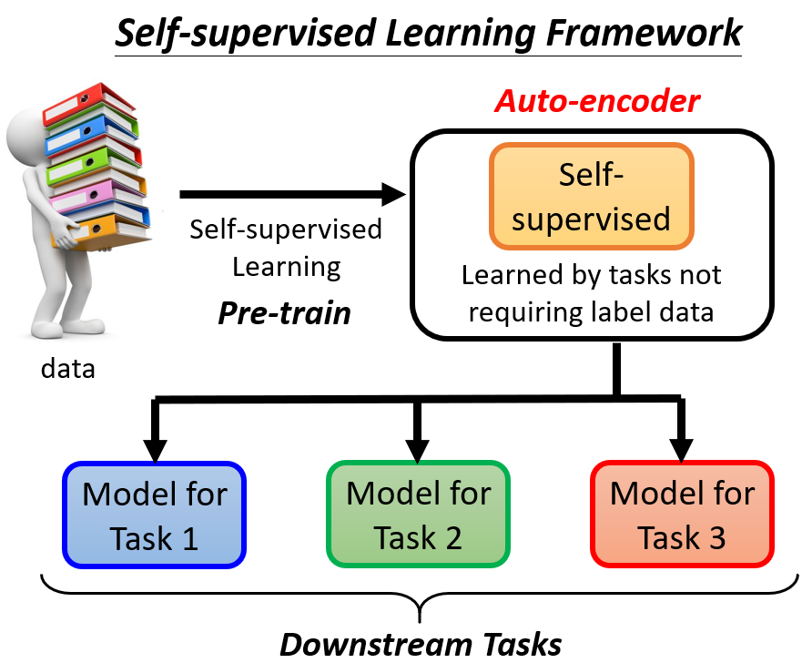
theory
假设有大量的图片,在 Auto-Encoder 中有两个 Network, 一个叫做 Encoder, 一个叫做 Decoder
- Encoder 把一张图片读进来, 把这张图片encode 成一个向量, Encoder 可能是很多层的 CNN, 接下来这个向量作为 Decoder 的输入
- Decoder 会生成一张图片, 所以 Decoder 的 Network 的架构像是 GAN 中的 Generator, 例子是 11 个向量输出一张图片
训练的目标是希望,Encoder 的输入跟 Decoder 的输出,越接近越好
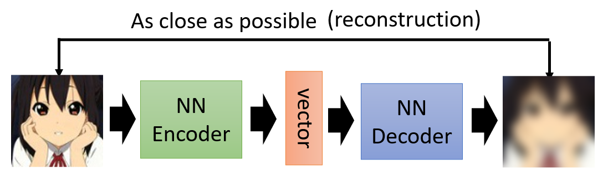
把图片看作是一个很长的向量, 我们希望这个向量跟 Decoder 的输出的距离越接近越好, 也叫做 Reconstruction重建。这与Cycle GAN的目标一致
Encoder：输入图片，输出另外比较低维的向量，图片通过 Encoder 的压缩以后,变成了一个低维度的向量 也就是 Embedding,Representation 或者 Code,再拿这个低维度的向量,来做接下来想做的事情,这就是常见的 Auto-Encoder用在 Downstream 的任务,用在下游任务的方法。把高维度的东西转成低维度的向量又叫做 Dimension Reduction，所以可以把 Auto-Encoder 的Encoder拿来做 Dimension Reduction。
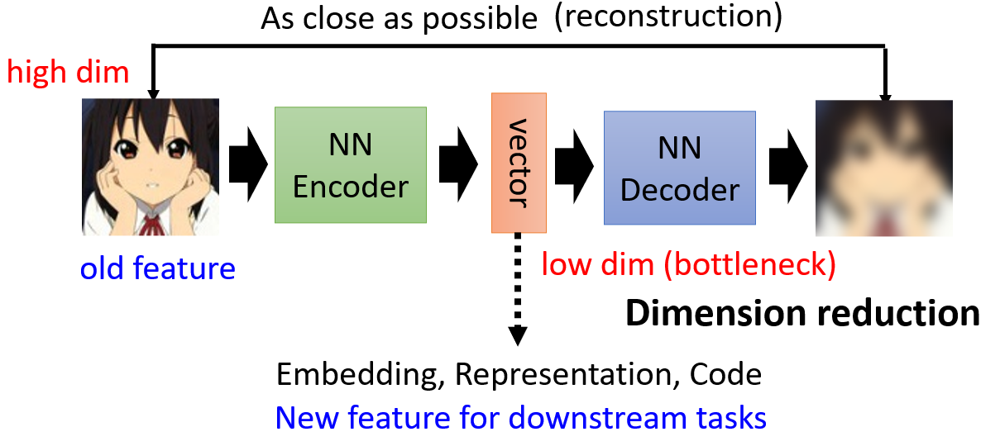
通常 Encoder 的 Output 会设得很小,比如说 10，100 这样的等级,所以这个 Encoder 的输出,有时候又叫做 Bottleneck 瓶颈
Why Auto-encoder?
当我们把一个高维度的图片,变成一个低维度的向量的时候,到底带来什么好处?
Auto-Encoder 是把一张图片压缩又还原回来, 但是还原这件事情为什么能成功呢？
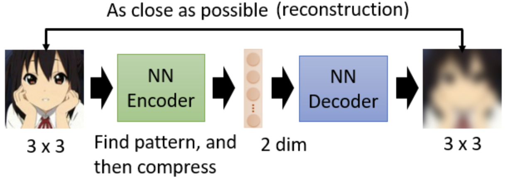
假设本来图片是 3×3, 9 个数值, 假设 Encoder 输出的这个向量是二维的,我们怎么可能从二维的向量, 去还原 3×3 的图片,还原9个数值呢？
因为,对于影像来说,并不是所有 3×3 的矩阵都是图片,图片的变化其实是有限的, 随便 Sample 一个 Random 的 Noise 出来它通常都不是你会看到的图片。
假设图片是 3×3 的,那它的变化,虽然表面上应该要有 3×3 个数值,才能够描述 3×3 的图片,但是也许它的变化实际上是有限的，如图所示4种可能性。
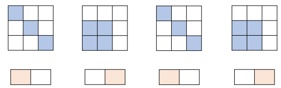
所以在 Encoder 的时候,可以就只用两个维度描述一张图片, 虽然图片是 3×3,应该用 9 个数值才能够储存,但是实际上它的变化也许只有四种类型。
Encoder 做的事情就是化繁为简, 本来比较复杂的数据可能只是表面上比较复杂,事实上的变化是有限的, Encoder 就是找出它有限的变化, 用比较简单的方法来表示原来的数据。在下游的任务里面, 可能就只需要比较少的训练数据, 就可以让机器学到本来要它学的事情, 这就是 Auto-Encoder 的概念
Auto-encoder is not a new idea
Auto-Encoder 不是一个新的想法,是非常非常地有历史,举例来说在这个 Hinton, Deep Learning 之父 在 06 年的 Science 的 Paper 裡面,就有提到 Auto-Encoder 这个概念
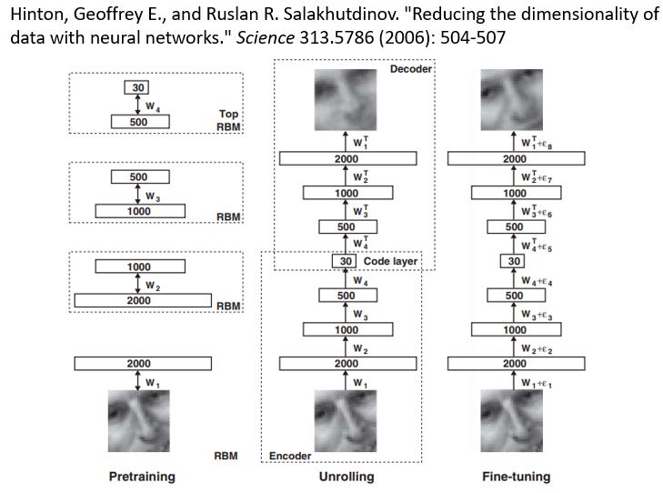
那时候觉得把 Network 叠很多很多层,然后每一层一起 Train 不太可能成功,所以那时候的信念是,每一层应该分开训练,所以 Hinton 用的是一个叫做,Restricted Boltzmann Machine 的技术,缩写是 RBM
De-noising Auto-encoder
Auto-Encoder 还有一个常见的变形,叫做 De-Noising 的 Auto-Encoder。De-Noising 的 Auto-Encoder 是把原来要输进去给 Encoder 的图片,加上一些噪声, 然后一样通过 Encoder,一样再通过 Decoder,试图还原原来的图片
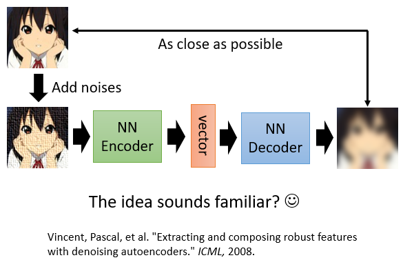
现在 Encoder 跟 Decoder,除了还原原来的图片这个任务以外,它还多了一个任务,就是,它必须要自己学会把噪声去掉
今天的 BERT 的话,其实可以把它看作就是一个 De-Noising 的 Auto-Encoder
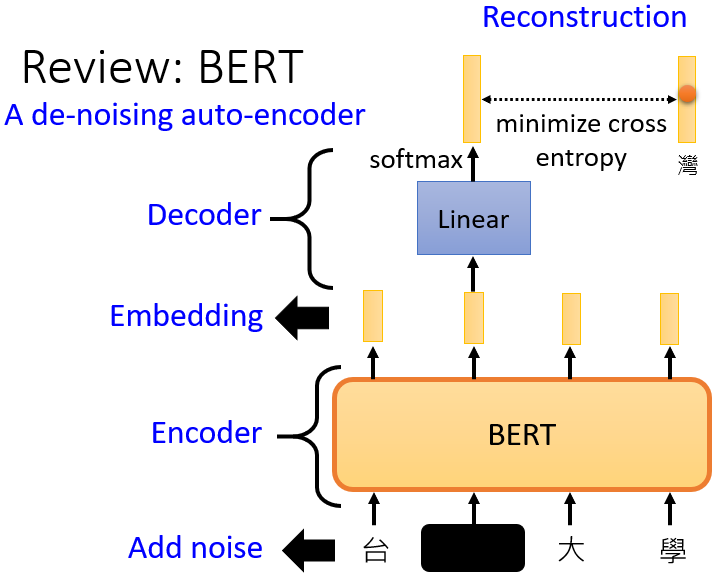
Masking 其实就是 Noise,BERT 的模型就是 Encoder,它的输出就是 Embedding， 接下来有一个 Linear 的模型,就是 Decoder,Decoder 要做的事情,就是还原原来的句子,也就是把填空题被盖住的地方,把它还原回来。
Feature Disentangle
Auto-Encoder,可以用来做当 strime 的任务以外, 还其他有意思的应用： Feature Disentanglement
Disentangle 的意思就是 把一堆本来纠缠在一起的东西解开
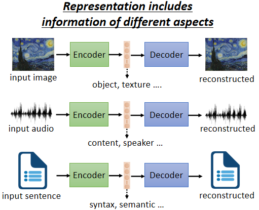
Auto-Encoder 的作用：
- 如果是图片的话,就是把一张图片变成一个 Code,再把 Code 变回图片,既然这个 Code 可以变回图片, 这个 Code 包含图片裡面所有的信息
- 如果用在语音上, 把一段声音丢到 Encoder 裡面变成向量 再丢回 Decoder,变回原来的声音, 这个向量包含了语音里所有重要的信息,包括这句话的内容即就是 Encoder 的信息, 和这句话是谁说的就是 Speaker 语者信息
- 如果一篇文章丢到 Encoder 里面变成向量, 这个向量通过 Decoder 会变回原来的文章, 向量可能包含文章文句的句法、语意的信息, 但是这些信息是全部纠缠在一个向量裡面,我们并不知道一个向量的哪些维,代表了哪些信息
而 Feature Disentangle 想要做到的事情就是, 在 Train 一个 Auto-Encoder 的时候, 同时知道这个 Representation, 或又叫做 Embedding、Code, 的哪些维度代表了哪些信息
比如语音上的应用--- Voice Conversion
Voice Conversion 的中文叫做语者转换，过去在做这个 Voice Conversion 的时候啊,我们需要成对的声音讯号。假设你要把 A 的声音转成 B 的声音,你必须把 A 跟 B 都找来,叫他读一模一样的句子。而今天有了 Feature Disentangle 的技术以后,也许我们期待机器可以做到,就给它 A 的声音 给它 B 的声音,A 跟 B 不需要唸同样的句子,甚至不需要讲同样的语言,机器也有可能学会把 A 的声音转成 B 的声音
假设我们收集到一大堆人类的声音讯号, 然后拿这堆声音讯号去 Train 一个 Auto-Encoder, 同时又做了 Feature Disentangle 的技术, 所以我们知道在 Encoder 的输出中, 哪些维度代表了语音的内容,哪些维度代表了语者的特征。接下来,我们就可以把两句话, 声音跟内容的部分互换
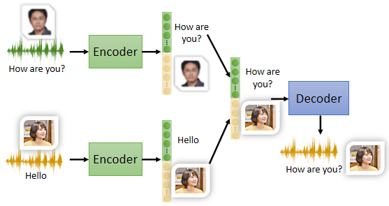
举例来说, 只要把我说话的内容的部分取出来,把你老婆说话的声音特征的部分取出来,把它拼起来,丢到 Decoder 裡面,就可以用你老婆的声音,讲我说的话的内容
Discrete Latent Representation
到目前为止假设这个 Embedding 就是一个向量,这样就是一串数字,它是 Real Numbers,那它可不可以是别的东西呢？举例来说,它可不可以是 Binary, Binary 的好处也许是说,每一个维度,它就代表了某种特征的有或者是没有。或者这个向量强迫它一定要是 One-Hot 也就是每一个东西图片丢进去,你的 Embedding 裡面只可以有一维是 1,其他都是 0 的话,也许可以做到 unSupervised 的分类。
Discrete Representation 其中最知名的就是 VQVAE,Vector Quantized Variational Auto-Encoder
VQVAE 就是输入一张图片,Encoder 输出一个向量, 这个向量它是一般的向量,它是 Continuous 的,但接下来有一个 Codebook。
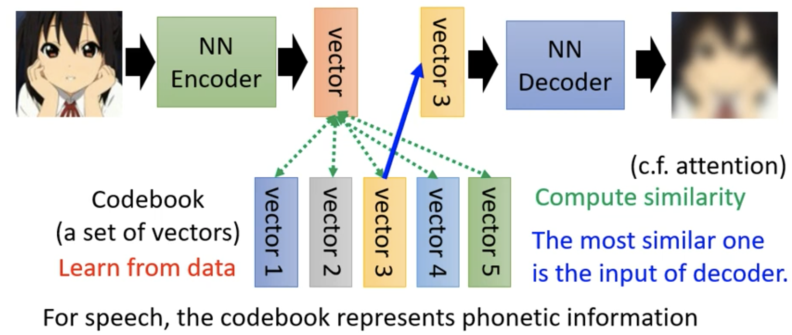
所谓 Codebook 的意思就是,你有一排向量,这排向量也是 Learn 出来的,你把 Encoder 的输出,去跟这排向量都去算个相似度，把相似度最大的那个 Vector 拿出来作为Decoder 的输入。假设 Codebook 有 32 个向量,那你 Decoder 的输入,就只有 32 种可能,等于就是让你的这个 Embedding,它是离散的 没有无穷无尽的可能。
Text as Representation
假设做文字的 Auto-Encoder, 文字的 Aauto-Encoder 的概念跟语音的影像的没有什么不同, 就是你有一个 Encoder,一篇文章丢进去, 产生一个向量, 把这个向量丢到 Decoder, 再让它还原原来的文章。但可不可以说我们的 Embedding 就是一串文字呢
如果把 Embedding 变成一串文字, 也许这串文字就是文章的摘要。
不过 Encoder 需要是一个 Seq2seq 的 Model,比如说 Transformer,因为输入是文章, 输出是一串文字。一个 seq2seq2seq 的 Auto-Encoder, 它把长的 Sequence 转成短的 Sequence,再把短的 Sequence 还原回长的 Sequence。
但实际上这样 Train 起来以后发现是行不通的, Encoder 产生的一段文字人看不懂, 但Decoder 可以看得懂,它还原得了原来的文章。再用 GAN 的概念,加上一个 Discriminator ，Discriminator 看过人写的句子, 所以它知道人写的句子长什么样子。
Encoder 要想办法去骗过 Discriminator, Encoder 要想办法产生一段句子,这段句子不只可以通过 Decoder,还原回原来的文章,还要是 Discriminator 觉得像是人写的句子。
以下是真正 Network 输出的结果,用 Auto-Encoder 的方法,拿 300 万篇文章做训练以后, 然后看看给它一篇新的文章。
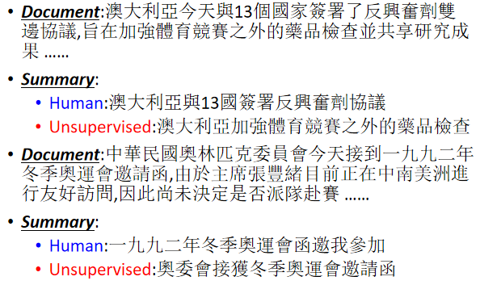
More Applications
- Generator
Decoder 就是一个 Generator ,可以从一个已知的 Distribution,比如说 Gaussian Distribution,Sample 一个向量,丢给 Decoder,看看它能不能够输出一张图。
- Compression
完全可以把 Encoder 的输出,当做是一个压缩的结果,因为一张图片,是一个非常高维的向量,而一般我们 Encoder 的输出,是一个非常低维的向量,完全可以把那个向量看作是一个压缩的结果。所以 Encoder 就是压缩, Decoder 就是解压缩。只是这个压缩是 lossy 的压缩, 会失真。
- Anomaly Detection
异常检测，异常检测要做的事情就是,新的资料到底跟之前训练资料,相不相似
异常检测的应用，可以来做诈欺侦测, 假设训练资料裡面, 有一大堆信用卡的交易纪录，多数信用卡的交易都是正常的。拿这些正常的信用卡训练的交易纪录,来训练一个异常检测的模型, 有一笔新的交易纪录进来, 就可以让机器帮你判断说,这笔纪录算是正常的 还是异常的。
或者是它可以拿来做网路的这个侵入侦测,举例来说,你有很多连线的纪录资料, 多数人都是好人, 接下来有一笔新的连线进来,你可以根据过去正常的连线,训练出一个异常检测的模型。或者是它在医学上也可能有应用,你收集到一大堆正常细胞的资料,拿来训练一个异常检测的模型,那也许看到一个新的细胞,它可以知道这个细胞有没有突变,也许有突变,它就是一个癌细胞等等
这种异常检测的问题它的难点,在收资料上面。通常有办法收集到正常的资料,你比较不容易收集到异常的资料,不是一个一般的分类的问题,这种分类的问题又叫做 One Class 的分类问题
举例来说, 用真人的人脸,来训练一个 Auto-Encoder。训练完这个 Aauto-Encoder ，可以计算这一张照片通过 Encoder,再通过 Decoder 以后，你可以去计算这个输入的照片,跟这个输出的照片,它们的差异有多大。如果差异很小,你的 Decoder 可以顺利地还原原来的照片,代表这样类型的照片,是在训练的时候有看过的,不过反过来说,假设有一张照片是训练的时候没有看过的那你的 Decoder,就很难把它还原回来,如果你计算输入跟输出的差异,发现差异非常地大,那就代表说,现在输入给 Encoder 的这张照片,可能是一个异常的状况,